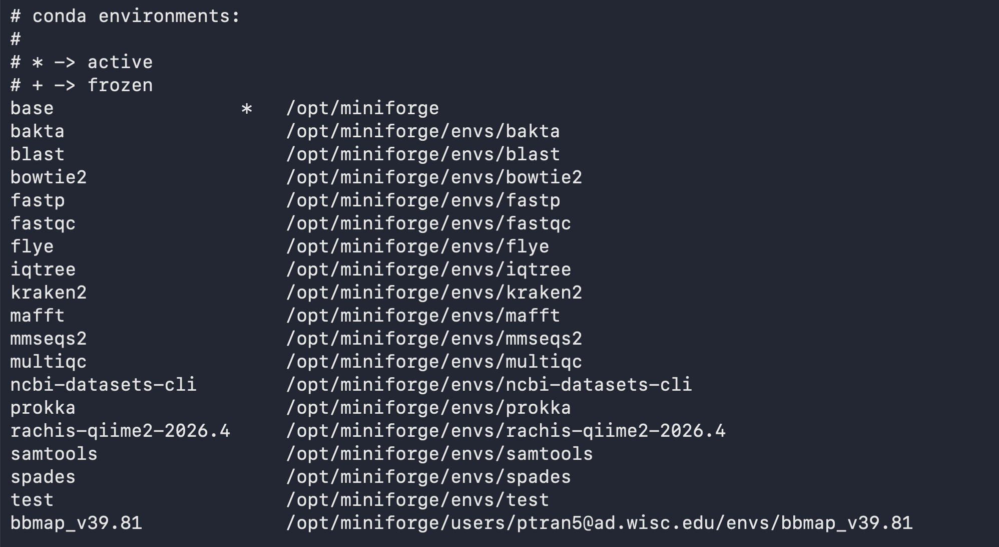

Department of Bacteriology compute server for research purposes
1 Overview and suitable uses
The Department of Bacteriology computer server is available for researchers in the Department of Bacteriology free of use. It has been repurposed from previous IT needs and is currently available for research needs.
As a result, the server should not be expected to be expanded or upgraded for additional compute power in the future; rather is just to provide an additional compute environment for learning and analyzing small datasets if needed. The server will be supported from Summer 2026 to its natural end-of-life, in a few years (no exact date).
The departmental server is suitable for:
Learning simple bioinformatics skills like the command and software installation and usage
Analyzing small datasets (your own data or test data)
Quickly checking or testing a software you will want to use as part of a larger project
If you are working on an analysis-heavy project, other free campus compute resources might be more suitable. The Bioinformatics Research Support Service will be happy to meet with you to advise on what compute resource + training is most suited for your project needs, and where you currently are in your bioinformatics learning journey.
For example, we train many researchers in implementing their bioinformatics work on the Center for High Throughput Computing (CHTC) HTC cluster, or how to run smaller interactive jobs on BadgerCompute.
All the core skills you are using on the departmental server will be transferable to scaling your work on larger-scale computing resources. We actually work closely with their research facilitation team and meet with them monthly to update each other on what biologists are using research computing for!
The Dept of Bacteriology’s Bioinformatics Research Support Service will be happy to meet with you frequently or as needed to teach you some more advanced topics needed to use the departmental server and the compute resources of our campus partners.
1.0.1 Requesting access
To request access, please fill out this Google Form.
The form will ask you about:
Name and lab affiliation
Summary of the type of bioinformatics work you would like to do on the server
General idea of how much data storage you will need
End date of the server access
Once you submit the form, we will be notified by e-mail that you have submitted something.
You will then receive an e-mail confirming that you have been added within 1-2 business days (except during holidays and our time-off). If necessary, we might ask for more questions to understand your project.
1.1 Policies and Expectations
- Accounts are linked with your UW-Madison netid and you should not share you log in information with others.
- The server is for academic research use only.
- You must comply with all UW institutional policies (https://data.wisc.edu/institutional-data-policy/), and all local, state and federal laws.
- Protected data should not be imported into the server nor analyzed on the server. For more details on data classification, visit: https://data.wisc.edu/data-governance/data-classification/
We will be strict on rules 1-4, and if we noticed that we will deactivate your account immediately, and let you know and your PI know.
Additional usage rules:
- Always test your jobs using a minimal number of CPUs (at most 4) before running it on your real dataset.
- When running jobs (see How-to section of the guide), limit the # of cpus to at most 8 even on real jobs.
- In addition, to 6, always check the current memory and cpus load and adjust your cpus if other concurrent jobs are running.
Testing and running jobs might be more tricky, and and we understand that mistakes can happen, especially as you are learning how to use the server or learning to use the command line.
If we notice not following these rules, we will contact you by e-mail if we notice anything strange and you will have chances to rectify the situation. This can happen 3 times before we deactivate your account.
If the situation is more severe and your job is taking over the server and affecting the performance of the system, we reserve the right to immediately cancel your job. Hence, it is important for you to keep track of the code you run (or have ran) in scripts so you can adjust and rerun it if that happens. This counts towards the 3-warnings limit we apply to all users.
1.2 Technical Server Specs
The server provides:
- 48 physical CPU cores (96 logical CP hyperthreading enabled)
- 384 GB of RAM
- Approximately 1.8 TB of usable local storage
- The current (08/2026) storage space in
/home/is 100GB across all users. This is where you can store small text files such as scripts. - Scratch space:
/mnt/scratchis 600GB. This is where large input and output files go.
We have currently implemented a 10GB per home per user and 60GB per /mnt/scratch per user, limiting our server available to 10 user accounts at once. As we roll it out and get a better sense of how many people want to use it, this can change. Stay tuned and/or let me know your thoughts!
1.3 Usage policies
1.3.1 CPU
Be considerate of other users.
Never use all 96 CPUS. We recommend ~16CPU per user per job.
Limit overall load to 75CPUS across all users and jobs at once. Check system load with
htop.
1.3.2 Memory
- If you want to run a job with >250 GB RAM, please contact us ahead of time for now.
1.3.3 Storage
Store scripts and small files in
/home/netid@ad.wisc.edudirectories. Home directories are 100GB across all users. Each user has a quota of 10GB by default.Store your datasets in
/mnt/scratch. The Scratch directories are 600GB combined across all users. Each user starts with a quota of 60GB.You are responsible for removing unused files and environments regularly.
Use
conda clean –allonce in a while to clean your conda environments and save disk space.ImportantIf a user exceeds the soft cap, they will have 30 days to clear enough space to sit below the soft cap before they cannot write to the directory anymore.
1.4 Software available
To use software, we have conda environments set up. Conda is a software package managers that allows us to create distinct environments where distinct versions of software is installed.
Conda (miniforge, technically) environments are organized this way on the server:
“Gold” environments: we have pre-installed these for all users. Located at this path:
/opt/miniforge. Users can simple activate the environment of their choice to begin using the software.User-created environments: If a software you want to use is not pre-installed, you can create your own conda environment, and your environments will be saved at this path:
/opt/miniforge/users/<your NetID>/envs. Other users on the server will not be able to see the environments under your NetID.
Check out the section “How to –> Using software” for more information!
1.5 Databases
Certain common bioinformatics software requires large databases and will be stored in /mnt/scratch/databases. Paths to specific databases are listed in the section How To –> Using Software –> Use “Gold Images” when they will become available.
Due to the storage limitations of the repurposed server, we don’t host too many databases. However, we have large databases such as AlphaFold3, NCBI Blast NR, GTDB-tk (multiple versions), on the CHTC HTC cluster – which we can help you learn how to use as well.
As we are just launching this in 08/2026, we have not prioritized which databases to include yet. Let me know if you have any suggestions please.
1.6 Data storage
1.6.1 Research Drive
When we planned for setting-up this server, we discussed with CALS IT about the possibility to link ResearchDrive on here. This will be done on a case-by-case basis with each PI. If you are interested in this option, please let me know.
However, if your data is stored in ResearchDrive but it’s quite small (a few GB), you can simply use regular file transfer tools like scp (see section #Importing and Exporting Data) to transfer files.
1.7 Back-ups
We currently do not have an automatic back-up service for the server. Please transfer out your relevant output files. NEVER use the server as your sole storage space for your data. A good practice for data backup with the 3-2-1 backup rule: keep 3 copies of your data: original and two backups, two types of media, and 1 copy offsite such as cloud storage (like Box, GoogleDrive, Box).
2 How-to
2.1 The command line
A command line (or CLI) is a text-based interface used to interact with a computer’s operating system. Instead of clicking icons with a mouse, you type specific text commands to navigate files, run programs, and manage system settings.
You can find a number of tutorials online if you search for terms like : “intro to the command line” “how to use the command line” “unix shell introduction”, etc.
If you are looking for a step-by-step written tutorial I recommend The Carpentries Introduction to the Unix Shell course (free, asynchronous), especially the section “Navigating files and directories”.
Below are a list of useful commands:
| Command | Full Name / Meaning | Description & Primary Usage | Common Examples |
|---|---|---|---|
pwd |
Print Working Directory | Displays the absolute path of the directory you are currently in. | pwd |
ls |
List | Lists files and directories in the current or specified directory. | lsls -lhls -lht |
cd |
Change Directory | Moves your current location to a different folder. | Directly to the path ( Up a folder: Directly to home: |
mkdir |
Make Directory | Creates a new folder. | Make directory in current folder:
Make directory at a specific path regardless of where you are:
|
rmdir |
Remove Directory | Deletes an empty directory. | rmdir old_folder |
cp |
Copy | Copies files or directories from a source to a destination. | Copy file.txt to backup.txt (does not delete file.txt):
Copy a whole folder by using the
|
mv |
Move | Moves files/folders to a new location or renames them. WARNING! If you already have a file name new_name.txt it will OVERWRITE it. |
mv file.txt /new/path/mv old_name.txt new_name.txt |
CAUTION!!!!
|
Remove | Deletes files or directories permanently. | rm unwanted_file.txtrm -rf folder_name/ |
touch |
Touch | Creates an empty file or updates the timestamp of an existing file. | touch script.sh |
cat |
Concatenate | Prints the entire contents of a file directly to the terminal. |
Print all the files ending with .txt and redirect to the file name contents.txt
|
less |
Less | Opens a file in an interactive, scrollable viewer (q to exit). |
less large_log.txt |
head |
Head | Outputs the first 10 lines of a file by default. |
Change the number of lines what appear:
|
tail |
Tail | Outputs the last 10 lines of a file by default. | tail data.csvtail -f server.log |
find |
Find | Searches for files and directories matching specific patterns. | find . -name "*.sh" |
grep |
Global Regular Expression Print | Search and filter a file based on a text pattern | Search for everything
Search for the word
|
2.2 Connecting to the Bacteriology server
Once you receive your e-mail confirming that you have been added to the user list that can access the server, you will need to:
- Be connected to the internet, and be on the Bacteriology department VPN or the UW-Madison campus VPN.
- Then, you will use your Terminal App (Mac) or an SSH program (Windows; examples: Powershell, Terminal (WSL), PuTTy, MobaXTerm):
ssh <Net ID>@gipsydanger.bact.wisc.edu
Replace <Net ID> with your own netID, and no need to use the <> brackets.
You may need to have your multi-factor authentication nearby.
2.3 Important folders
The first time you log into the system, you will be in your user home, which path is /home/netid@ad.wisc.eduby default, where netid will be replace with your own netid. This is where you will store your scripts and small files.
The /home storage location is currently 100GB available across all users.
Because of the small folder size for home, the other folder to be aware of the the scratch folder.
/mnt/scratch/ is where you can store your raw data, input and output files.
2.4 Using software
2.4.1 First time using conda environments on the server
Do this regardless on if you plan on using software we have pre-installed or if you plan on installing your own in your own conda environments.
To use Miniforge (conda/mamba commands), do the following:
/opt/miniforge/bin/conda initmamba shell init --shell bash --root-prefix=/opt/miniforgeLog out and back in
Notice the presence of the parenthesis with a name in front of your prompt tells you that miniforge (conda) is activated. The default one is (base), but if you type conda activate envrname, then it will change to (envrname), hinting to you that you have that current envrname environment activated. This can help you figure out if the commands you want to use are available within that specific environment.
Once you have done this once, you do not need to do this again next time you log in.
2.4.2 Viewing available software
Once logged into the server, and after having initalized conda for the first time, type conda env list
An example of the printout is shown here:
The
*indicates which environment is activated. Right now, it’sbaseand doesn’t have any specific software installed.The first column is the environment name. Use that name when you do
conda activate name, for example,conda activate blastThe second column show the path where the software is installed. You don’t really need to cd into these folders, but you can use it to distinguish which ones are the
gold imagesand which ones are just by you for you. the ones at/opt/miniforge/envs/are gold images for everyone, including yourself. The ones are/opt/miniforge/users/netidare from/for that specific person.

See the two sections belows for more information the gold images or how to create your own environments.
2.4.3 Using pre-installed software (“gold images”)
From any folder location, you can type conda env list to view the most updated list of software available.
Rows in the printout with a link to /opt/miniforge are some that we have pre-installed for everyone. Refer to the environment name in the first column to activate the environment of your choice.
For example: conda activate nameoftheenvr (replace nameoftheenvr with the actual name).
The table below shows some software pre-installed for all to use. When applicable, the path to the relevant database is included.
| Software | Use | Name of the conda environment (conda activate name) |
Relevant database path (if needed) | Software Version | Help page |
| fastqc | quality checking reads | fastqc | FastQC v0.12.1 | fastqc -h | |
| multiqc | reporting, summarizing outputs | multiqc | MultiQC v1.35 | multiqc -h | |
| fastp | filtering and trimming reads | fastp | fastp 1.3.6 | fastp -h | |
| spades | assembler | spades | SPAdes genome assembler v4.3.0 | spades.py -h | |
| flye | long-read assembler | flye | flye 2.9.6-b1802 | flye -h | |
| prokka | gene calling and annotation | prokka | prokka 1.15.6 | prokka -h | |
| bakta | annotation program that uses multiple databases | bakta | TO DO | bakta 1.12.0 | bakta -h |
| eggnog-mapper | annotation program that uses multiple databases | ||||
| iqtree | phylogenetic trees | iqtree | IQ-TREE version 3.1.2 | iqtree -h | |
| mafft | multiple sequence alignment | mafft | MAFFT v7.525 | mafft -h | |
| kraken2 | classification of reads | kraken2 | TO DO | Kraken version 2.17.1 | kraken2 -h |
| qiime2 | analysis tool for 16S rRNA amplicon microbiome projects | rachis-qiime2-2026.4 | QIIME 2 version: 2026.4.0 | qiime info | |
| blast | NCBI Blast, includes blastn, blastp, blastx, etc. | blast | blastn: 2.17.0+, blastp: 2.17.0+, blastx: 2.17.0+ | blastp -help, blastn -help, blastx -h | |
| samtools | Tools for dealing with SAM, BAM and CRAM alignment files | samtools | samtools 1.24 | samtools –help | |
| bowtie2 | Read mapping tool | bowtie2 | bowtie version 2.5.5 | bowtie2 -h | |
| mmseqs2 | Read mapping tool | mmseqs2 | MMseqs2 Version: 18.8cc5c | mmseqs -h |
2.4.4 Creating your own conda environment
You should not have to wait after us to use the software you want. Here are some instructions to install any software yourself. These will be installed only for you though!
Log in to the server
Type
conda env listto view what is availableDecide how you want to name your environment, for example, if you want to name it
blast. You would then typeconda env create -n blastMake sure the environment is created:
conda env list- You should see a new row in the table named blast
- The star * indicates which environment is currently activated.
You need to install the software within the environment, not in the generic base environment. To do this, activate the correct environment:
conda activate blastConfirm that the prompt should now say
(blast)or whatever your environment name is.To figure out what command to use to install the software:
Go to anaconda.org
Use the search bar to search for a program of your choice
Review the results under “packages”.
Often, bioinformatics software is published under the
biocondachannel.Click on the package name, and copy the installation instructions, they will look something like this:
conda install bioconda::blastPaste that conda install command into your terminal
Test that your software has been installed
Make sure the environment is still activated (word in parenthesis)
Check the manual of your software to see how to find the help page. Usually this is the software name followed by
-hor--hor-helpor some variation of that.You can also start typing the software name and use the tab button on your keyboard to try to autocomplete the name.
Troubleshooting.
Make sure you are spelling the name of the software correctly; it is case sensitive
Sometimes, the name of the software as published vs. how to access it via the command line is slightly different: check the documentation of your software to try to figure out how to use it
Deactivating the environment
- To ensure that you are not installing all kinds of unrelated software and versions under the same environment and to keep things clean, deactivate the environment once you’re done using the software.
You can always deactivate and activate the environment in the future once it has been created. You don’t need to re-create the environment or reinstall the software
If you ever forget which environment you’ve created, type
conda env list
You can have multiple conda environments even if it’s the same tool. For example, you might have analyzed your data using software v. 1.5.2 but the a new paper you found this week is using software v. 1.6.2, a more updated version since you’ve done your analysis, and their results and figures are really interesting.
Perhaps in between those version, new databases have been added that are more representative of the genomic data available for your study organisms. You might want to create a new, distinct conda environment with the updated software version to test the new software + database so compare how your results, but also want to keep the older software available, since you’ve already done your preliminary research using that and you know it worked.
2.4.5 Docker containers
There is the ability to use Docker containers, but based on the researchers we have helped in the past few years, we think that most users would find miniforge/conda easier to learn to use. If you are interested in using docker just let us know, and if there are multiple people who are interested, we will fill in this portion of the guide.
2.5 Managing jobs
As we are just launching this computing option, we do not know yet how many researchers are interested in using the compute server, so the way that we manage jobs will likely change in the future.
For now, since the server is just for small analysis and jobs, just make sure to limit the number of cores (threads) you are using to 16 per user, and that your jobs don’t run for too long (<12 hours).
If there are lots of users, then we will likely need to set some limits on the jobs - TBD.
If you are running large-scale projects (e.g. many samples, lots of cpus/threads, very long jobs) other campus computing resources will be better suited for your needs. Ask us to teach you how to use them!
In the beginning of the roll out of the system, we will be looking a bit more closely at who is using the server and how. But we hope not to have to micromanage this in the future. The strategy we will use to manage jobs will depend on how many users actually sign up to use the server.
2.6 Executing a job
You can run commands directly from your home folder while connected to the server. As you are testing here are some tips:
Keep track of your code, have a document nearby to copy-paste your commands or what you are trying and the outputs, just like you would when you are doing a wet lab experiment and writing in a lab notebook.
Write down exact commands, errors you are having, and how you solved the error
Always start by reading the software manual from the original developers. There will usually be a section with some example commands, or how to use parameters. Sometimes, there is a test dataset that they provide so test that the software you installed (or that we have installed for you) can go through all the execution steps.
If you have pressed enter and the job is running, but it’s taking too long and you want to stop it you can press `CTRL+C` to get your prompt again.
When you have tested an example command and know how to use it properly, you can write the command inside of a bash script, save it, make it executable, and run it in the background for example:
Step 1. Use nano to write a file named fastqc.sh
#!/bin/bash
conda activate fastqc
mkdir /mtn/scratch/netid/fastqc
fastqc /mnt/scratch/netid/data/reads/*.fastq.gz -o /mtn/scratch/netid/fastqc
conda deactivateThe first line, #!/bin/bash is the header and must be included at the beginning of your .sh (bash) file to tell the computer that this is a bash script.
Step 2. Make it executable: chmod +x fastqc.sh
Step 3. Run your job in the background: nohup bash fastqc.sh > fastqc.log
What does this mean?
nohupallows you to run code in the background. So if you need to close your laptop or disconnect, the job will continue running. This is helpful for very long jobs.bashtells the computer that we are giving it a bash script to run.That bash script is the
fastqc.shscript we used previously.the
>means save the terminal output to a file.That file is the log file, in this case, named
fastqc.log.
Storing your code in a .sh file is sure way to make your work more reproducible as it contains the exact conda environment you used, and the exact command you use - in case you ever need that in the future, for example when writing your methods section of a paper. The .log file is useful to have because it contains helpful information about troubleshooting.
2.7 Importing and Exporting files
You can use a FileTransfer program, such as FileZilla or CyberDuck to transfer files.
You can also use the command line and follow this format:
scp fileyouwantomove whereyouwantomoveit
- To transfer files from your laptop to the server:
- Open a terminal on your laptop (not logged into the server)
scp filename serveraddress:/path/on/server- For example:
scp sample1.fastq.gz netID@gipsydanger.bact.wisc.edu:/mnt/scratch/netid/data/.
- To transfer a file from the server to your laptop
- Open the terminal and move to the location on your laptop where you want the file to be exported to:
scp netID@gipsydanger.bact.wisc.edu:``/mnt/scratch/netid/output/analysed_data.fasta .
3 Questions
If you have any bioinformatics/workflows/research computing questions about the Bacteriology server, please address them to the Bioinformatics Research Support Service by contacting us or making an appointment with us.
If you have any questions/issues related to the machines themselves should be sent via the CALS IT ticketing system at https://helpdesk.cals.wisc.edu/